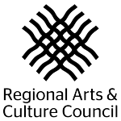

Cultural, art & social events often rely on spoken, sung, performed or recorded sound to convey their cultural message or narrative experience. This is often inaccessible to those with hearing loss.
In answer to this, CymaSpace is announcing a formal ‘Call for Artists’ for paid artists for a special new performing arts program that furthers our mission to make performing arts inclusive and accessible to the Deaf and Hard-of-Hearing beginning Summer 2016.

This Arts & Accessibility showcase series of performing arts events will demonstrate how technology and the celebration of Deaf Culture can transform accessibility from an after-thought, into an art form of its own merit. This new project will also present new opportunities for underserved Deaf artists to develop their artistic practices and share their work with new hearing audiences.
If you are interested in participating in this program as a performing artist, please complete this brief proposal form below. Proposals will be accepted on a rolling basis and will close May 15th 2016 whereupon final selections will be announced.